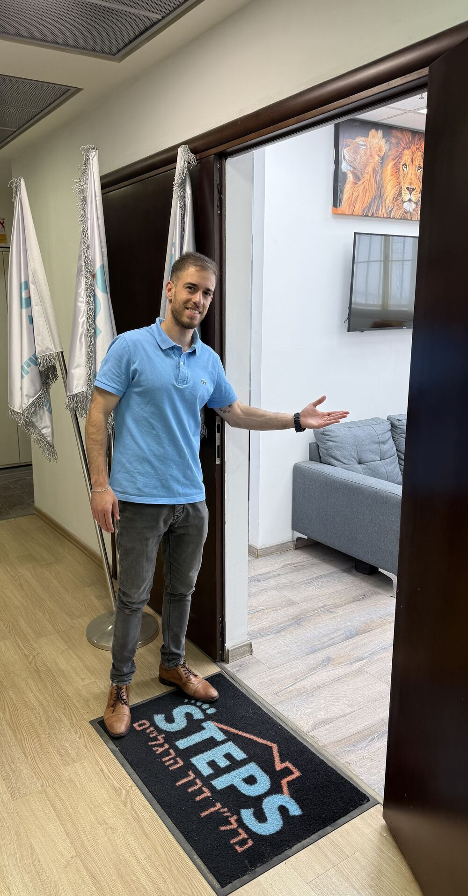

ליווי משקיעיםGuiding investors
החברה לליווי משקיעי נדל״ן.The company for guiding property investors.
קונספט לדוגמה שנבנה עבור נדל״ן STEPS · זה אינו האתר הרשמי של העסקA sample concept built for STEPS Real Estate · This is not the business’s official website
נדל״ן STEPS, החברה לליווי משקיעי נדל״ן של עדי ורן. ליווי בהשקעה או ברכישת דירה, משדרות ההסתדרות בחיפה.STEPS Real Estate, Adi and Ran’s company for guiding property investors. Guidance on an investment or on buying a home, from Histadrut Avenue in Haifa.
עדי ורן · השותפיםAdi & Ran · the partners
שני שותפים ומשרד אחד בחיפה.Two partners and one office in Haifa.

ברוכים הבאיםCome in
שדרות ההסתדרות 177, חיפה177 Histadrut Ave, Haifa
מהשיחה הראשונה ועד העסקה, עם אותם שני אנשים.From the first talk to the deal, with the same two people.
השקעה בנדל״ן או רכישת דירה, מקצה לקצה.Property investment or buying a home, end to end.
החברה לליווי משקיעי נדל״ן.The company for guiding property investors.
מהחיפוש ועד הדלת.From the search to the door.
על המחיר של הנכס.On the property’s price.
שישי 9:00–14:00 · שבת סגורFri 9:00–14:00 · Sat closed
שדרות ההסתדרות 177, חיפה177 Histadrut Ave, Haifa
שלוש בחירות, וההודעה מוכנה.Three choices and the message is ready.
STEPSעדי ורןAdi & Ran
שלום, כאן STEPS. במה אפשר לעזור?Hi, this is STEPS. How can we help?
מהרגע הראשון קיבלתי תחושה של מקצועיות, ביטחון ושקיפות. הם שולטים בפרטים, מסבירים הכול בצורה ברורה… ממליץ בחום על עדי ורן ועל STEPS.
From the very first moment I felt professionalism, confidence and transparency. They master the details and explain everything clearly… I warmly recommend Adi, Ran and STEPS.
רן ועדי ליוו אותנו בתהליך רכישת דירה מקצה לקצה. היו קשובים ומקצועיים מאוד בכל שאלה והתלבטות.
Ran and Adi guided us through buying an apartment from start to finish. They were attentive and very professional with every question and doubt.
עדי ורן שני מקצוענים שנותנים באהבה וברצון מהידע שלהם לאחרים… ליווי אישי וחונך.
Adi and Ran are two professionals who share their knowledge with others gladly and with love… personal guidance and mentoring.
מעבר לתהליך המקצועי, לא פחות חשוב זה התהליך המנטלי והפסיכולוגי, והם עשו את זה בצורה הכי טובה שיש.
Beyond the professional process, the mental and psychological process matters just as much, and they did it in the best way possible.
ליווי מטורף מקצה לקצה! רן ועדי באמת מבינים נדל״ן ועוזרים בכל שלב ושלב.
Amazing guidance from start to finish! Ran and Adi really understand real estate and help at every single stage.
עדי ורן צוות של אלופים! מאוד מקצועיים והכל באווירה נעימה וחיובית! ממליצה בחום!
Adi and Ran are a team of champions! Very professional, and all in a pleasant, positive atmosphere! Warmly recommended!
STEPS היא החברה לליווי משקיעי נדל״ן. לקוחות מספרים גם על ליווי ברכישת דירה, מקצה לקצה.STEPS is a company for guiding property investors. Clients also describe being guided through buying an apartment, from start to finish.
עם עדי ורן, השותפים ב-STEPS.With Adi and Ran, the STEPS partners.
שדרות ההסתדרות 177, חיפה. כדאי לתאם בוואטסאפ לפני שמגיעים.177 Histadrut Ave, Haifa. It’s best to arrange it on WhatsApp before you come.
ראשון עד חמישי 9:00–20:00, שישי 9:00–14:00, שבת סגור.Sunday to Thursday 9:00–20:00, Friday 9:00–14:00, closed Saturday.